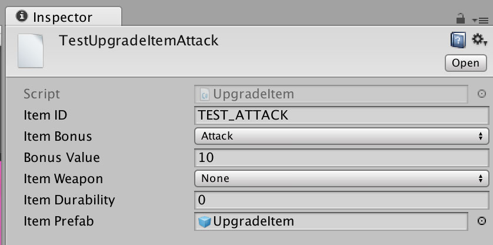
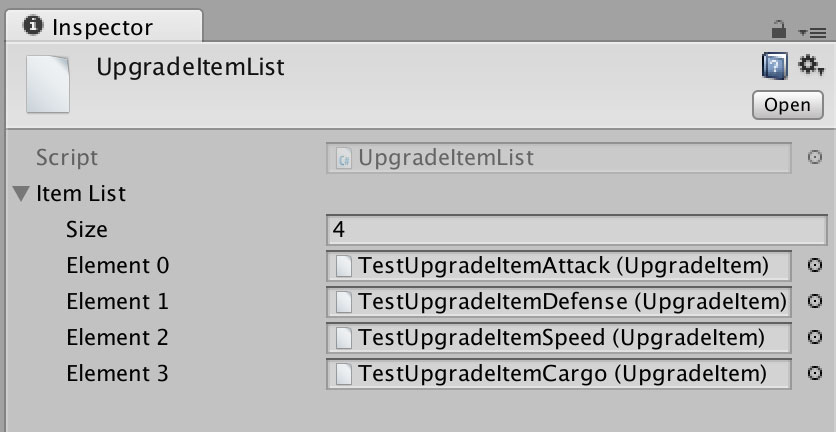
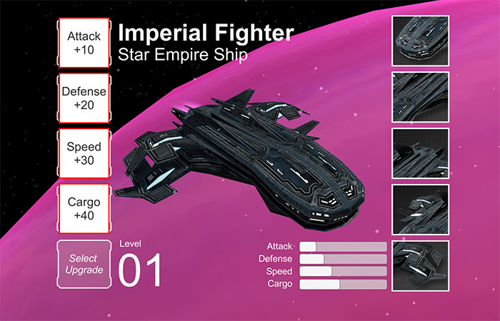

Estou um pouco atrasado com este projeto, mas ele não está parado! Neste último fim de semana tive mais tempo para trabalhar no projeto, e comecei a mover algumas coisas de playground para prototype. Isto significa que a fase de experimentar coisas está chegando ao fim e que logo (eu espero!) todos os testes que fiz serão um protótipo jogável.
Itens de Upgrade
Existe um recurso no Unity que eu gosto muito de usar, os Scriptable Objects. Eles são arquivos para armazenar dados gerados a partir de classes que pode ter qualquer coisa, desde que seja serializado. O vídeo abaixo é um treinamento da Unity e um excelente tutorial explicando como usar este recurso, vale a pena assistir!
Eu fiz uma classe para definir algumas características dos itens, como ID, bonus, tipo, e outras coisas que nem sei se vou usar mas coloquei para ter mais dados para testar. Também criei uma outra classe para armazenar todos os itens, assim eu posso selecionar qualquer item a partir de algum filtro usando LINQ.


Salvando o progresso do jogo
Ainda é cedo para o jogo ter um progresso para ser salvo, mas comecei a construir a base para poder montar o inventário baseado em um arquivo com os dados do jogador. Fiz uma classe para armazenar as informações básicas da nave, como nível, nome e classe, e uma matrix para armazenar itens por slot (10 slots na interface com 10 itens em cada). O video abaixo, também de um treinamento da Unity, é um excelente tutorial mostrando as diferenças entre usar o PlayerPrefs e serializar dados em uma classe.
Itens na interface
Criei um prefab com apenas um texto para testar adicionar os itens carregados a partir do save game na interface. Estou armazenando o ID do item como string, e usando LINQ busco por este ID na lista de scriptable objects.
Eu recomendo dar uma olhada no código do jogo no projeto para ver como isto foi implementado. Lembrando que este código é apenas um teste, e ainda será melhorado. Abaixo está o resultado de carregar os itens na interface, o próximo passo é carregar mais itens em cada slot e permitir alterar o item ativo.

Framework Frictioness
O Frictioness é um excelente framework para criar instâncias de classes como um serviço e enviar/receber mensagens. Por enquanto estou usando apenas o serviço RegisterSingleton para criar uma instância única da classe DataManager, mas em breve irei utilizar o serviço de RouteMessage.
Utilizar o Frictioness permite implementar uma maneira melhor de compartilhar instâncias e eventos pelo projeto do que referenciar ou passar objetos como parâmetros para classes static, como um singleton padrão. Nos próximos posts vou explicar mais sobre este framework e sua implementação quando adicionar mais coisas no projeto.
Conclusão
Se você olhar o código vai ver que tudo citado neste post requer um pouco mais trabalho do que parece, principalmente por eu ter desenvolvido tudo sem uma definição clara. Agora eu que estou começando a trabalhar mais no protótipo do jogo sinto a falta de ter pelo menos um GDD definindo algumas coisas básicas do jogo.
Outra coisa que me incomoda é o fato de eu ainda estar trabalhando na tarefa de interface do inventário. Claro que não é um inventário simples, mas gostaria de terminar isso logo e voltar ao gameplay. Provavelmente no próximo post da série devo estar próximo de terminar a mecânica básica do inventário, e vou poder integrá-lo com o jogo.
O andamento do projeto pode ser conferido no GitHub, e neste link você pode ver as alterações no projeto até este post. Todos os posts desta série sobre meu projeto podem ser vistos na tag Final Frontier, e como sempre qualquer sugestão ou opinião é bem vinda!